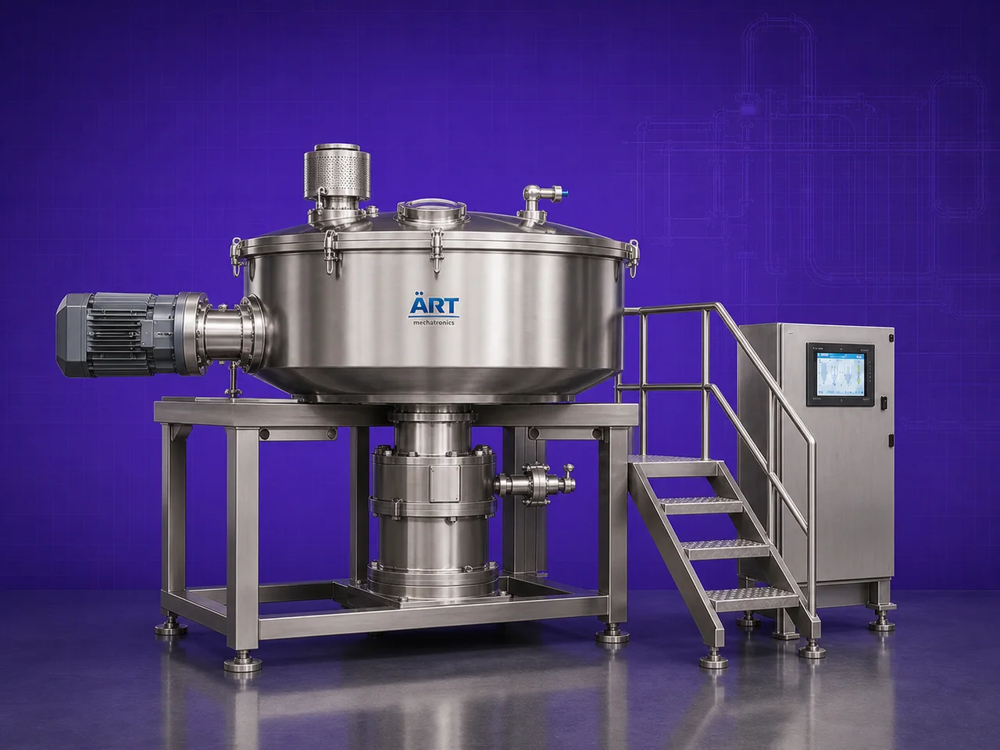

Rapid Mixer Granulator (RMG) Machine – High Shear Granulation System for Powder Processing)
A Rapid Mixer Granulator (RMG) Machine, also known as a High Shear Granulator or Wet Granulation Machine, is an advanced industrial processing equipment designed for rapid mixing, wet granulation, densification, and homogeneous blending of powders and granules.

About the Rapid Mixer Granulator - Rmg (RMG)
The machine combines:
- High-speed mixing
- Granulation
- Binder distribution
- Uniform particle formation
inside a single closed processing system, making it one of the most essential machines in industries such as pharmaceuticals, nutraceuticals, food processing, chemicals, cosmetics, and specialty powder manufacturing.
Rapid Mixer Granulators are widely used for producing:
• Uniform granules
• Improved flow properties
• Better compressibility
• Consistent particle size distribution
The machine operates using a high-speed impeller and chopper assembly, which creates intense mixing and granulation action for fast and efficient processing.
ART Mechatronics offers high-performance RMG machines, engineered for high productivity, GMP-compliant processing, hygienic operation, and reliable industrial performance.
One machine, many names
Buyers search for this equipment under many terms — we manufacture all of them:
Working Principle of Rapid Mixer Granulator
Ensures homogeneous distribution of ingredients
Produces dense and uniform granules
Types of Rmg Machines
Industries Using Rapid Mixer Granulator
💊 Pharmaceutical Industry
- Tablet granulation
- API processing
🌿 Nutraceutical Industry
- Supplement granules
🍃 Food Processing Industry
- Instant food premixes
⚗️ Chemical Industry
- Chemical powder granulation
💄 Cosmetic Industry
- Cosmetic powder processing
Features & Advantages
- Fast mixing and granulation
- Uniform granule formation
- High shear processing efficiency
- Reduced processing time
- Excellent binder distribution
- Improved product flowability
- GMP-compliant hygienic construction
- Low maintenance operation
- Suitable for automated production lines
Technical Highlights
- Capacity: Lab scale to industrial production scale
- Mixing System:
- High-speed impeller
- Chopper assembly
- Construction: Stainless Steel (GMP compliant)
- Operation: Automatic / PLC-based
- Discharge: Pneumatic / Manual
- Safety Features: Interlocks and protection systems
Turnkey Granulation Solutions
ART Mechatronics offers:
- Complete RMG system design
- Integration with:
- Fluid Bed Dryer (FBD)
- Milling systems
- Tablet compression lines
- Automation and control systems
- Installation & commissioning
- After-sales service & AMC
Why Choose Art Mechatronics
- Expertise in pharmaceutical process equipment
- GMP-compliant manufacturing standards
- Customized granulation solutions
- High-performance and durable machines
- Reliable industrial operation
Applications
- Pharmaceutical Manufacturing Units
- Nutraceutical Production Plants
- Food Processing Industries
- Chemical Processing Plants
- Cosmetic Manufacturing Units
Industries that use the Rapid Mixer Granulator - Rmg (RMG)
Related Mixing & Blending machines
Get pricing & specs for the Rapid Mixer Granulator - Rmg (RMG)
Share the product, target capacity, current process and plant location. These details help our engineers discuss the right machine or line configuration.
One partner, from design to start-up
ART Mechatronics designs, manufactures, installs and commissions your Rapid Mixer Granulator - Rmg (RMG) solution with regional presence in India, UAE and Thailand.